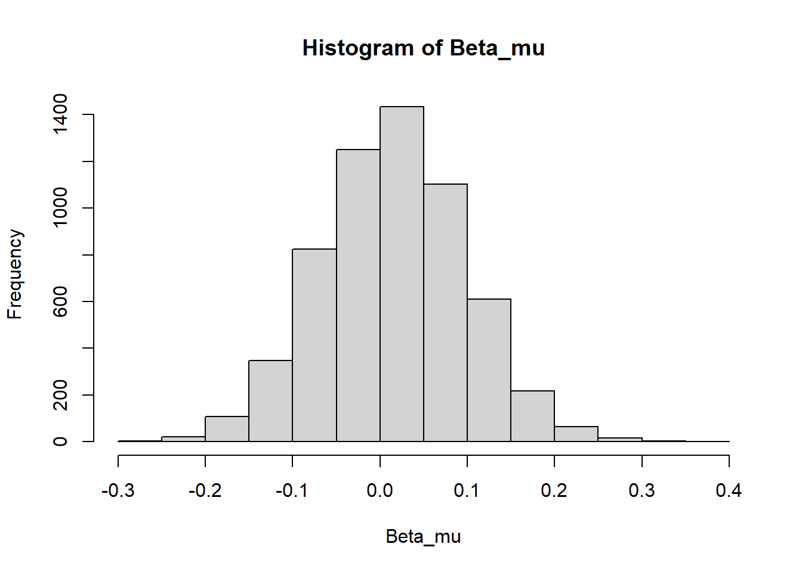

2 Within partner SAM
SAMs build on the Stan code we used for a basic animal model (1.5) in three key ways: (i) by implementing an autoregressive moving average (ARMA) function between the social reaction norms (SRNs) of individuals and their partners, (ii) within-individual centering of SRNs, and (iii) estimating selection gradients on SRN parameters. Note that (ii) is only applicable to study designs in which individuals are measured across multiple partners, and thus does not apply to the model presented below, while (iii) is handled in the fitness model chapter ((??)). The theoretical and statistical motivation behind each of these extensions is explained in detail by Martin and Jaeggi (2021). After estimating a SAM, we also want to extract the model posteriors and subsequently estimate the assortment matrix \(\boldsymbol{\mathrm{B_{\alpha}}}\), the selection gradients \(\mathrm{s_{\mu}}\) and \(\mathrm{s_{\psi}}\), and the responses to selection \(\Delta \bar{\mathrm{\mu}}\) and \(\Delta \bar{\mathrm{\psi}}\).
Here we provide a tutorial for the within-partner SAM, presented as Eq 3.1 in Martin and Jaeggi (2021), which is appropriate for sampling designs where each individual is measured interacting with a single partner over multiple time intervals, e.g. \(t= \left \{ 1,2,3 \right \}\) to index the first, second, and third observation of a focal individual with the same social partner. We ignore the fitness model proposed in Eq 5 until the fitness model chapter to focus attention on coding the basic SAM. For clarity, we focus on the simple linear models presented in the paper, largely ignoring complications such as the inclusion of additional random and fixed effects for adjusting estimates, which can be accomplished using basic approaches for any Stan model. See the Stan Reference Manual and Stan Case Studies for further details. The detailed coding tutorials in Chapter 1 are also crucial for understanding the Cholesky decompositions, reaction norm heritabilities, and non-centered and matrix normal parametrizations used below, which we do not review again in detail.
2.1 Formal overview
The formal model for a measurement of aggression \(z_{jt}\) in focal individual \(j\) at time \(t\) is given by
\[z_{jt} = \mu_0 + \eta_{jt} + \xi_{jt}\] \[\eta_{jt} = \begin{Bmatrix} \mu_j + \left( \psi_1 + \psi_j \right)\mu_k' & \mathrm{if} \ t = 1 \\ \mu_j + \left( \psi_1 + \psi_j \right)\eta_{kt-1}' & \mathrm{else} \end{Bmatrix} \]
\[\xi_{jt} = \begin{Bmatrix} \epsilon_j & \mathrm{if} \ t = 1 \\ \epsilon_j + \phi\epsilon_{kt-1}' & \mathrm{else} \end{Bmatrix} \]
\[\mu_j = \mu_{\mathrm{A}j} + \mu_{\mathrm{E}j}, \quad \psi_j = \psi_{\mathrm{A}j} + \psi_{\mathrm{E}j}\] with the equivalent specification for the social partner’s aggression measure \(z_{kt}'\)
\[z_{kt}' = \mu_0 + \eta_{kt}' + \xi_{kt}'\] \[\eta_{kt}' = \begin{Bmatrix} \mu_k' + \left( \psi_1 + \psi_k' \right)\mu_j & \mathrm{if} \ t = 1 \\ \mu_k' + \left( \psi_1 + \psi_k' \right)\eta_{jt-1} & \mathrm{else} \end{Bmatrix} \]
\[\xi_{kt}' = \begin{Bmatrix} \epsilon_k' & \mathrm{if} \ t = 1 \\ \epsilon_k' + \phi\epsilon_{jt-1} & \mathrm{else} \end{Bmatrix} \]
\[\mu_k' = \mu_{\mathrm{A}k}' + \mu_{\mathrm{E}j}', \quad \psi_k' = \psi_{\mathrm{A}k}' + \psi_{\mathrm{E}k}'\] The random effects are assumed to be well-described by multivariate normal distributions.
\[\begin{bmatrix} \boldsymbol{\mu_{\mathrm{A}}}, \boldsymbol{\mu'_{\mathrm{A}}},\boldsymbol{\psi_{\mathrm{A}}},\boldsymbol{\psi}'_{\mathrm{A}} \end{bmatrix}^{\mathrm{T}} \sim \mathrm{MVNormal}(\boldsymbol{0}, \boldsymbol{\mathrm{G}} \otimes \boldsymbol{\mathrm{A}} ) \] \[\begin{bmatrix} \boldsymbol{\mu_{\mathrm{E}}}, \boldsymbol{\mu'_{\mathrm{E}}},\boldsymbol{\psi_{\mathrm{E}}},\boldsymbol{\psi}'_{\mathrm{E}} \end{bmatrix}^{\mathrm{T}} \sim \mathrm{MVNormal}(\boldsymbol{0}, \boldsymbol{\mathrm{E}} \otimes \boldsymbol{\mathrm{I}} ) \] \[\begin{bmatrix} \boldsymbol{\epsilon}, \boldsymbol{\epsilon}' \end{bmatrix}^{\mathrm{T}} \sim \mathrm{MVNormal}(\boldsymbol{0}, \boldsymbol{\mathrm{\Sigma}} ) \] We also assume that the social reaction norm (SRN) intercept and slope (co)variances are equivalent for focal (\(\boldsymbol{\mu},\boldsymbol{\psi}\)) and social partners (\(\boldsymbol{\mu}',\boldsymbol{\psi}'\)). The G matrix can therefore be reduced to a 2x2 matrix for all individuals in the population
\[\boldsymbol{\mathrm{G}}= \begin{bmatrix} \mathrm{var([\boldsymbol{\mu},\boldsymbol{\mu}'])} & \mathrm{cov([\boldsymbol{\mu},\boldsymbol{\mu}'],[\boldsymbol{\psi},\boldsymbol{\psi}'])} \\ \mathrm{cov([\boldsymbol{\psi},\boldsymbol{\psi}'],[\boldsymbol{\mu},\boldsymbol{\mu}'])} & \mathrm{var([\boldsymbol{\psi},\boldsymbol{\psi}'])} \end{bmatrix}\]
The residual matrix \(\boldsymbol{\Sigma}\), however, estimates separate variances and covariances for the focal and partner residuals, which allows the model to account for residual covariance and feedback effects (collectively referred to as SRN measurement errors \(\boldsymbol{\xi}\) and \(\boldsymbol{\xi}'\)).
\[\boldsymbol{\Sigma}= \begin{bmatrix} \mathrm{var(\boldsymbol{\epsilon})} & \mathrm{cov}(\boldsymbol{\epsilon},\boldsymbol{\epsilon}') \\ \mathrm{cov}(\boldsymbol{\epsilon}',\boldsymbol{\epsilon}) & \mathrm{var(\boldsymbol{\epsilon'})} \end{bmatrix}\] This model is, therefore, appropriate for situations where the distinction between focal and partner is semi-arbitrary, e.g. when measuring within-sex interactions or when males and females exhibit similar patterns of phenotypic variation. In this case, we make the latter assumption for simplicity. To account for differences between the responses of focal individuals and social partners, the model can simply be extended with additional parameters, e.g. specifying separate \(G_M\) and \(G_F\) matrices for males and female respective genetic (co)variances and so on.
2.2 Computational approach
As shown in Chapter 1, we can express the formal model above in a mathematically equivalent but more computationally efficient manner by decomposing the covariance matrices into matrices of correlations and SDs, using lower triangular Cholesky decompositions on the correlation matrices. For example, the genetic covariance is given by
\[\boldsymbol{\mathrm{G}}_{cov}= \boldsymbol{\mathrm{G}_{sd}} \boldsymbol{\mathrm{G}}_{cor} \boldsymbol{\mathrm{G}_{sd}}\]
\[\boldsymbol{\mathrm{G}}_{cor} = \boldsymbol{\mathrm{L}}_{Gcor} \boldsymbol{\mathrm{L}}_{Gcor}^{\mathrm{T}} = \begin{bmatrix} 1 & \mathrm{cor}([\boldsymbol{\mu},\boldsymbol{\mu'}],[\boldsymbol{\psi},\boldsymbol{\psi'}] ) \\ \mathrm{cor}([\boldsymbol{\psi},\boldsymbol{\psi'}], [\boldsymbol{\mu},\boldsymbol{\mu'}] ) & 1 \end{bmatrix}\]
\[\boldsymbol{\mathrm{G}_{sd}}=\begin{bmatrix} \mathrm{sd}([\boldsymbol{\mu},\boldsymbol{\mu'}]) & 0 \\ 0 & \mathrm{sd}([\boldsymbol{\psi},\boldsymbol{\psi'}]) \end{bmatrix}\]
The estimation of the Kronecker product \(\boldsymbol{\mathrm{G}} \otimes \boldsymbol{\mathrm{A}}\) is achieved through sampling of a non-centered matrix normal distribution
\[\begin{bmatrix} [\boldsymbol{\mu_{\mathrm{A}}}, \boldsymbol{\mu_{\mathrm{A}}}']^{\mathrm{T}} & [\boldsymbol{\psi_{\mathrm{A}}}, \boldsymbol{\psi_{\mathrm{A}}}']^{\mathrm{T}} \end{bmatrix} = \boldsymbol{L_{\mathrm{A}}} \begin{bmatrix} [\boldsymbol{\mu_{\mathrm{A.std}}}, \boldsymbol{\mu_{\mathrm{A.std}}}']^{\mathrm{T}} & [\boldsymbol{\psi_{\mathrm{A.std}}}, \boldsymbol{\psi_{\mathrm{A.std}}}']^{\mathrm{T}} \end{bmatrix} (\boldsymbol{\mathrm{G}_{sd}}\boldsymbol{\mathrm{L}_{Gcor}})^{\mathrm{T}} \]
which is appropriate for estimating values drawn from
\[\begin{bmatrix}[\boldsymbol{\mu_{\mathrm{A}}}, \boldsymbol{\mu_{\mathrm{A}}}']^{\mathrm{T}} & [\boldsymbol{\psi_{\mathrm{A}}}, \boldsymbol{\psi_{\mathrm{A}}}']^{\mathrm{T}} \end{bmatrix} \sim \mathrm{Matrix\ Normal}(\boldsymbol{0}, \boldsymbol{\mathrm{L_A}} \boldsymbol{\mathrm{L_A}}^{\mathrm{T}}, \boldsymbol{\mathrm{L_{Gcov}}} \boldsymbol{\mathrm{L_{Gcov}}}^{\mathrm{T}} ) \equiv \\ \mathrm{vec}( \begin{bmatrix} [\boldsymbol{\mu_{\mathrm{A}}}, \boldsymbol{\mu_{\mathrm{A}}}']^{\mathrm{T}} & [\boldsymbol{\psi_{\mathrm{A}}}, \boldsymbol{\psi_{\mathrm{A}}}']^{\mathrm{T}} \end{bmatrix}) \sim \mathrm{MVNormal}(\mathrm{vec}(\boldsymbol{\mathrm{0}}), \boldsymbol{\mathrm{G_{cov}}} \otimes \boldsymbol{\mathrm{A}} ) \]
The environmental effects are estimated with a standard non-centered multivariate matrix normal parametrization
\[\mathrm{SRN}_{\mathrm{E}}=\left[ \boldsymbol{\mu_{\mathrm{E}}} \ \boldsymbol{\mu_{\mathrm{E}}}' \right]=\left[ \boldsymbol{\mu_{\mathrm{E.std}}} \ \boldsymbol{\mu_{\mathrm{E.std}}}' \right] (\boldsymbol{\mathrm{E}_{sd}}\boldsymbol{\mathrm{L}_{Ecor}})^{\mathrm{T}} \] The \(\mathrm{std}\) values are standard normal deviates, i.e. \(\mathrm{std~\sim Normal}(0, 1)\), that are scaled to appropriate (co)variance through the separated SD and correlation parameters.
For Bayesian estimation, we place very weakly regularizing priors on the fixed population intercept, slope, and residual feedback parameters.
\[\mu_0, \psi_1, \phi \sim \mathrm{Normal}(0, 1)\] As explained in Chapter 1 (1.5), we also place priors on the total phenotypic variance of the SRN intercepts and slopes, as well as SRN heritability parameters that are used to derive the additive genetic and permanent environmental variance.
\[\mathrm{sd}([\boldsymbol{\mu},\boldsymbol{\mu'}]), \mathrm{sd}([\boldsymbol{\psi},\boldsymbol{\psi'}])\sim \mathrm{Half-Cauchy}(0,1)\] \[h_{\mu}^{2}, h_{\psi}^{2} \sim \mathrm{Beta}(1.2,1.2) \] where
\[\mathrm{Var}(\boldsymbol{\mu_\mathrm{A}}) = h_{\mu}^{2} \mathrm{Var}(\boldsymbol{\mu_\mathrm{ }}) \\ \mathrm{Var}(\boldsymbol{\mu_\mathrm{E}}) = (1-h_{\mu}^{2})\mathrm{Var}(\boldsymbol{\mu_\mathrm{ }})\]
\[\mathrm{Var}(\boldsymbol{\psi_\mathrm{A}}) = h_{\psi}^{2} \mathrm{Var}(\boldsymbol{\psi_\mathrm{ }}) \\ \mathrm{Var}(\boldsymbol{\psi_\mathrm{E}}) = (1-h_{\psi}^{2})\mathrm{Var}(\boldsymbol{\psi_\mathrm{ }})\] Priors can also be placed on the genetic and permanent environmental correlations
\[\boldsymbol{\mathrm{G}_{cor}},\boldsymbol{\mathrm{E}_{cor}} \sim \mathrm{LKJ}(2)\]
The same approach is used for decomposing the residual covariance matrix \(\boldsymbol{\Sigma}\).
\[\mathrm{sd}([\boldsymbol{\epsilon},\boldsymbol{\epsilon'}]) \sim \mathrm{Half-Cauchy}(0,1)\] \[\boldsymbol{\mathrm{\Sigma}_{cor}} \sim \mathrm{LKJ}(2)\]
2.3 Simulate data
2.3.1 SRN parameters
Here we rely on the custom pedfun() function introduced in Chapter 1 to generate an \(\boldsymbol{\mathrm{A}}\) matrix. We begin by setting the population parameters and simulating the SRN intercepts and slopes of males and females, assuming as stated above that their SRN parameters are characterized by equivalent covariance matrices.
library(mvtnorm)
#population properties
I=300 #total individuals for simulation
popmin=400
popmax=600
ngenerations = 10
nids<-sample(popmin:popmax, ngenerations, replace=TRUE) #N / generation
epm = sample(seq(0.15, 0.25,by=0.05),1) #extra-pair mating
nonb = sample(seq(0.4,0.6,by=0.05),1) #proportion of non-breeding / generation
#relatedness matrix
A_mat <- pedfun(popmin=popmin, popmax=popmax, ngenerations=ngenerations,
epm=epm, nonb=nonb, nids=nids, I=I, missing=FALSE)
#####################################################################
#Parameter values
#####################################################################
alpha_0 = 0 #global intercept
psi_1 = -0.5 #population interaction coefficient
phi = 0.5 #residual feedback coefficient (epsilon_j ~ epsilon_t-1k)
SD_intercept = 0.3 #standard deviation of SRN intercepts
SD_slope = 0.3 #SD of SRN slopes
r_alpha = 0.3 #assortment coefficient (expressed as correlation)
r_G = 0.3 #genetic correlation of random intercepts and slopes
r_E = 0.3 #environmental correlation
r_R = -0.3 #residual effect correlation (epsilon_tj = epsilon_tk)
V_G = 0.3 #genetic variance of REs
V_E = 0.3 #genetic variance of REs
res_V = 1
#Random effect correlations
G_cor <- matrix(c(1,r_G,r_G,1), nrow=2, ncol=2) #mu_A, beta_A
G_sd <- c(sqrt(V_G),sqrt(V_G)) #G effect sds
G_cov <- diag(G_sd) %*% G_cor %*% diag(G_sd)
E_cor <- matrix(c(1,r_E,r_E,1), nrow=2, ncol=2) #mu_E, beta_E
E_sd <- c(sqrt(V_E),sqrt(V_E)) #E effect sds
E_cov <- diag(E_sd) %*% E_cor %*% diag(E_sd)
#matrices
G_block <- G_cov %x% A_mat
E_block <- E_cov %x% diag(1,I)
#generate correlated REs
Gvalues <- rmvnorm(1, mean=rep(0,I*2), sigma=G_block)
G_val = data.frame(matrix(Gvalues, nrow=I, ncol=2))
cor(G_val)## X1 X2
## X1 1.00000 0.34703
## X2 0.34703 1.00000Evalues <- rmvnorm(1, mean=rep(0,I*2), sigma=E_block)
E_val = data.frame(matrix(Evalues, nrow=I, ncol=2))
cor(E_val)## X1 X2
## X1 1.0000000 0.3443145
## X2 0.3443145 1.0000000#combine temporary object for all SRN parameters
#use shorthand mu = 0, psi = 1
P = cbind(G_val,E_val)
colnames(P) = c("A0", "A1", "E0", "E1")
#individual phenotypic REs
#use shorthand mu = 0, psi = 1
P$P0 = P$A0 + P$E0
P$P1 = P$A1 + P$E1
#add ID
P$ID = seq(1:I)2.3.2 Assortment
We can now split the generated values into male and female values, assuming both sexes are evenly sampled so that \(N_M = N_F=N/2\). As is explained in Appendix S1 of Martin and Jaeggi (2021), we can then use a simple sorting procedure to assortment individuals on a single SRN parameter. In this case, we use the SRN intercepts \(\boldsymbol{\mu}\). A more general approach would be use to an additional social matrix \(\boldsymbol{\mathrm{S}}\) to add to the relatedness matrix \(\boldsymbol{\mathrm{A}}\) prior to scaling the additive genetic values.
library(MASS)
#split male and female values + add arbitrary ID
#use P0=mu and P1=psi for shorthand
sort.m = data.frame(P0_m = P$P0[1:(I/2)], ID_m = 1:(I/2) )
sort.f = data.frame(P0_f = P$P0[(I/2+1):I], ID_f = (I/2+1):I)
#sort by SRN intercept value
sort.m<-sort.m[order(sort.m[,"P0_m"]),]
sort.f<-sort.f[order(sort.f[,"P0_f"]),]
#generate random dataset with desired rank-order correlation
temp_mat <- matrix(r_alpha, ncol = 2, nrow = 2) #cor of male and female values
diag(temp_mat) <- 1 #cor matrix
temp_data1<-mvrnorm(n = I/2, mu = c(0, 0), Sigma = temp_mat, empirical=TRUE)
#ranks of random data
rm <- rank(temp_data1[ , 1], ties.method = "first")
rf <- rank(temp_data1[ , 2], ties.method = "first")
#induce cor through rank-ordering of RN vectors
cor(sort.m$P0_m[rm], sort.f$P0_f[rf])## [1] 0.2849774#sort partner ids into dataframe (order on male ID)
partner.id = data.frame(ID_m = sort.m$ID_m[rm], ID_f = sort.f$ID_f[rf])
partner.id = partner.id[order(partner.id[,"ID_m"]),]With the assorted ranks in partner.id, we can then structure the dataframe appropriately to match male and female partners with the desired correlation in SRN intercepts.
#put all dyads together
partner.id$dyadn = seq(1:nrow(partner.id))
#add values back to dataframe (male and joint)
partner.id$P0m <- P$P0[match(partner.id$ID_m,P$ID)]
partner.id$P0f <- P$P0[match(partner.id$ID_f,P$ID)]
partner.id$P1m <- P$P1[match(partner.id$ID_m,P$ID)]
partner.id$P1f <- P$P1[match(partner.id$ID_f,P$ID)]
partner.id$A0m <- P$A0[match(partner.id$ID_m,P$ID)]
partner.id$A0f <- P$A0[match(partner.id$ID_f,P$ID)]
partner.id$A1m <- P$A1[match(partner.id$ID_m,P$ID)]
partner.id$A1f <- P$A1[match(partner.id$ID_f,P$ID)]
partner.id$E0m <- P$E0[match(partner.id$ID_m,P$ID)]
partner.id$E0f <- P$E0[match(partner.id$ID_f,P$ID)]
partner.id$E1m <- P$E1[match(partner.id$ID_m,P$ID)]
partner.id$E1f <- P$E1[match(partner.id$ID_f,P$ID)]
#check correlation again
cor(partner.id$P0m, partner.id$P0f)## [1] 0.2849774 #check data structure
head(partner.id)## ID_m ID_f dyadn P0m P0f P1m P1f A0m A0f A1m A1f E0m E0f
## 33 1 271 1 -0.98292958 -0.4595182 -1.01370928 -0.2510860 -0.5839301 -0.01281163 -0.5124548 -0.43653431 -0.3989995 -0.44670656
## 122 2 187 2 -0.87351377 1.2035857 -0.47207888 -0.6222409 -0.6267525 0.16339484 -0.1316876 0.21807854 -0.2467612 1.04019090
## 69 3 203 3 -0.15213301 1.1302645 -0.08838429 0.3497706 0.2262680 0.82984968 0.2577036 0.29239188 -0.3784010 0.30041483
## 95 4 207 4 -0.89833719 -0.6790892 -0.11740600 -0.4635976 -0.2431738 -0.73817230 -0.3748932 -0.55474635 -0.6551634 0.05908314
## 17 5 155 5 1.10791742 0.8215398 0.26244304 -0.2756664 0.1418171 0.10915423 0.1474353 0.02272771 0.9661003 0.71238554
## 27 6 276 6 0.07024567 0.9435131 -0.88083215 1.2396521 -0.1589647 0.28871185 -0.4960971 0.87330676 0.2292104 0.65480122
## E1m E1f
## 33 -0.5012545 0.18544833
## 122 -0.3403913 -0.84031946
## 69 -0.3460879 0.05737876
## 95 0.2574872 0.09114871
## 17 0.1150077 -0.29839412
## 27 -0.3847350 0.366345392.3.3 Repeated measurements within the partner
For simplicity we consider a case with measurements of focal individuals and social partners taken over two discrete sampling periods, so that the time index \(t= \left \{ 1,2 \right \}\). We begin by expanding the dataframe for two measurements.
#number of dyads
ndyad = nrow(partner.id)
#expand for repeated measures
partner.id$rep <- 2 #two repeated measurements
pair_df <- partner.id[rep(row.names(partner.id), partner.id$rep),]We can first calculate the partner residuals for each observation, which will be used in the residual feedback component of the autoregressive moving average (ARMA) function specified in the next step.
#correlated residuals between male and females
R_cor <- matrix(c(1,r_R,r_R,1), nrow=2, ncol=2)
res_sd <- sqrt(res_V)
R_cov <- diag(c(res_sd,res_sd)) %*% R_cor %*% diag(c(res_sd,res_sd))
res_ind<-data.frame(rmvnorm(nrow(pair_df), c(0,0), R_cov))
pair_df$resAGm = res_ind$X1
pair_df$resAGf = res_ind$X2We can now specify our ARMA process across measurement time 1 and 2 for the latent SRN trait values for males \(\boldsymbol{\eta}\) and females \(\boldsymbol{\eta'}\), as well as the SRN measurement errors \(\boldsymbol{\xi}\) and \(\boldsymbol{\xi'}\).
#####################################################################
#Simulate responses over t = {1,2} per partner
#####################################################################
#add interaction number
pair_df$turn = rep(c(1,2),ndyad)
#individual prediction at t = 1
#males
#eta_j{t=1} = mu_j + (psi + psi_j)*mu_k
pair_df[pair_df$turn==1,"eta_m"] = pair_df[pair_df$turn==1,"P0m"] +
(psi_1 + pair_df[pair_df$turn==1,"P1m"])*(pair_df[pair_df$turn==1,"P0f"])
#females
#eta_k{t=1} = mu_k +(psi + psi_k)*mu_j
pair_df[pair_df$turn==1,"eta_f"] = pair_df[pair_df$turn==1,"P0f"] +
(psi_1 + pair_df[pair_df$turn==1,"P1f"])*(pair_df[pair_df$turn==1,"P0m"])
#individual prediction at t = 2
#males
#eta_j{t=2} = mu_j + (psi + psi_j)*(eta_k{t=1})
pair_df[pair_df$turn==2,"eta_m"] = pair_df[pair_df$turn==2,"P0m"] +
(psi_1 + pair_df[pair_df$turn==2,"P1m"])*(pair_df[pair_df$turn==1,"eta_f"])
#females
#eta_k{t=2} = mu_k + (psi + psi_k)*(eta_j{t=1})
pair_df[pair_df$turn==2,"eta_f"] = pair_df[pair_df$turn==2,"P0f"] +
(psi_1 + pair_df[pair_df$turn==2,"P1f"])*(pair_df[pair_df$turn==1,"eta_m"])
#add intercept and residuals (other fixed effects could be added here as well)
pair_df$AG_m = alpha_0 + pair_df$eta_m + pair_df$resAGm
pair_df$AG_f = alpha_0 + pair_df$eta_f + pair_df$resAGf
#add residual feedback process
pair_df[pair_df$turn==2,"AG_m"] = pair_df[pair_df$turn==2,"AG_m"] + phi * pair_df[pair_df$turn==1,"resAGf"]
pair_df[pair_df$turn==2,"AG_f"] = pair_df[pair_df$turn==2,"AG_f"] + phi * pair_df[pair_df$turn==1,"resAGm"]By adding together the SRN and residual feedback processes, we finally get the measured aggression trait values for males AG_m and females AG_f. Note that, because of the feedback process, it is more straightforward to specify these Gaussian responses by adding together their constitutive components, than by trying to sample responses directly from a distribution, e.g. such as \(z_{jt} \sim \mathrm{MVNormal}(\eta_{jt}+\xi_{jt}, \boldsymbol{\Sigma})\). We will similarly modify our basic animal model code in Stan when accounting for this ARMA process.
To aid in structuring our Stan model, we can also create some additional values and indices for males and females, which can be used to pull the appropriate focal and partner trait values from the vectors SRN parameters. The data can then be collected together in a list for Stan.
#individual indices
Im = I/2 #number of males
If = I/2 #number of females
N_sex = (I/2)*2 #total observations per sex
idm<-pair_df$ID_m #male ID
idf<-pair_df$ID_f #female ID
idf<-idf - Im #within female vector
#data prep for Stan
stan_data <-
list(N_sex = N_sex, I = I, Im=Im, If = If, idm = idm, idf = idf,
AG_m = pair_df$AG_m, AG_f = pair_df$AG_f, time = pair_df$turn, A = A_mat)2.4 Coding the model
We’re now prepared to code up our formal model in Stan. The basic structure builds on the animal model presented in Chapter 1 ((1.5)) with some small changes in labels, so we only direct attention toward new features of the social animal model code. Firstly, we need to declare the new data we’re passing into the model
data {
//indices and scalars used for model specification
int<lower=1> N_sex; //total aggression observations per sex (I/2 * 2 repeated measures)
int<lower=0> I; //total individuals (M + F)
int<lower=0> Im; //number of males
int<lower=0> If; //number of females
int<lower=1> idm[N_sex]; //index of male AG observations (of length N_sex)
int<lower=1> idf[N_sex]; //index of female AG observations
//empirical data
matrix[I,I] A; //relatedness matrix
real AG_m[N_sex]; //male aggression measurements
real AG_f[N_sex]; //female aggression measurements
real time[N_sex]; //time index (1,2 per individual)
}
transformed data{
matrix[I,I] LA = cholesky_decompose(A); //lower-triangle A matrix
}Then we adjust the parameters and transformed parameters. For the parameters, all we need to do is change the population regression coefficient \(\beta_1\) to the population interaction coefficient \(\psi_1\) and add a new residual feedback coefficient \(\phi\). To facilitate identification, we set \(-1 <\phi < 1\). Note that for efficiency we’ve dropped the previous cor labels from the lower Cholesky correlation matrices. The transformed parameters can otherwise be left as they previously were. Note that separate (co)variances could instead be estimated here for males and females here by declaring duplicate objects with sex-specific labels (and appropriately scaled relatedness matrices).
parameters {
//population effects
real alpha_0; //aggression global intercept
real psi_1; //expected interaction coefficient
real<lower=-1,upper=1> phi; //(-1,1) ensures unique solution
//random effects (standard deviations)
vector<lower=0, upper = 1>[2] sd_P; //phenotypic SRN mu & psi SDs
vector<lower=0, upper = 1>[2] sd_R; //male & female residual SDs
cholesky_factor_corr[2] LG; //genetic SRN correlations
cholesky_factor_corr[2] LE; //permanent environmental SRN correlations
cholesky_factor_corr[2] LR; //sex-specific residual correlations
matrix[I,2] std_devG; //individual-level unscaled G SRN deviations
matrix[I,2] std_devE; //individual-level unscaled E SRN deviations
//SRN heritability parmameters, i.e. Var(G_RN) / Var(P_RN)
//see supplementary appendix SI for further explanation of this parameter
vector<lower=0,upper=1>[2] SRN_h2;
}
transformed parameters {
vector<lower=0>[2] sd_G; //SDs of G effects (derived from sd_P)
vector<lower=0>[2] sd_E; //SDs of E effects (derived from sd_P)
matrix[I,2] SRN_P; //scaled P SRN parameter deviations
matrix[I,2] SRN_G; //scaled G SRN parameter deviations
matrix[I,2] SRN_E; //scaled E SRN parameter deviations
//standard deviations of genetic effects
//simplified from sqrt ( total RN phenotype variance * h2 )
sd_G[1] = sd_P[1] * sqrt(SRN_h2[1]); //genetic SD for RN intercepts
sd_G[2] = sd_P[2] * sqrt(SRN_h2[2]); //genetic SD for RN slopes
//standard deviations of environmental effects (total phenotype SD * proportion environment SD)
sd_E[1] = sd_P[1] * sqrt(1 - SRN_h2[1]); //environment SD for RN intercepts
sd_E[2] = sd_P[2] * sqrt(1 - SRN_h2[2]); //environment SD for RN slopes
//matrix normal parameterization of Kronecker product between G and A
SRN_G = LA * std_devG * diag_pre_multiply(sd_G, LG)' ;
//non-centered parameterization of permanent environmental effects
SRN_E = std_devE * diag_pre_multiply(sd_E, LE)';
//phenotypic RN effects (P = G + E); here G = additive genetic effects
SRN_P = SRN_G + SRN_E;
}We could separate the male and female SRN parameters in the transformed parameters block and save them along with the other estimated parameters, but this would be redundant. Instead, we aid coding by creating temporary sex-specific vectors in the model block. We also create temporary vectors for defining the time-specific SRN trait values and residuals. As noted above, we declare the residual vectors explicitly in the model, rather than using a standard generative distribution, because we need to flexibly specify the time-lagged associations among focal and social partner residuals.
model{
//separate male and female vectors for efficiency
matrix[Im,2] SRN_Pm = SRN_P[1:Im]; //male SRN phenotypic deviations
matrix[If,2] SRN_Pf = SRN_P[(Im+1):I]; //female SRN phenotypic deviations
//separate SRN intercepts and slopes (phenotypic deviations)
vector[Im] mu_m = col(SRN_Pm,1); //SRN intercepts
vector[If] mu_f = col(SRN_Pf,1);
vector[Im] psi_m = col(SRN_Pm,2); //SRN slopes
vector[If] psi_f = col(SRN_Pf,2);
//initialize vectors for constructing individual-centered linear predictors
vector[N_sex] eta_m; //male SRN trait value
vector[N_sex] eta_f; //female SRN trait value
vector[N_sex] linpred_m; //total expected value for male responses
vector[N_sex] linpred_f; //total expected value for female responses
vector[N_sex] epsilon_m; //SRN me for male responses
vector[N_sex] epsilon_f; //SRN me for female responses
//...
We can now use a conditional statement in Stan to first calculate the SRN trait values \(\boldsymbol{\eta}\) and \(\boldsymbol{\eta}'\). Here we use the previously created indices of IDs and time stamps to ensure that each observation is appropriately matched between focal individual and social partners.
//Male and female aggression response model
for (n in 1:N_sex) {
//SRN trait values
//assumes that n = 1 in the context of an ongoing social interaction
//if n = 1 prior to social context, then specify eta[t=1] = mu_j instead
if (time[n]==1)
{
//male eta[t=1] = mu_j + (psi + psi_j)*(mu_k)
eta_m[n] = mu_m[idm[n]] + (psi_1 + psi_m[idm[n]])*(mu_f[idf[n]]) ;
//female eta[t=1] = mu_k + (psi + psi_k)*(mu_j)
eta_f[n] = mu_f[idf[n]] + (psi_1 + psi_f[idf[n]])*(mu_m[idm[n]]);
}
else
{
//male eta[t=2] = mu_j + (psi + psi_j)*(eta_k[t=1])
eta_m[n] = mu_m[idm[n]] + (psi_1 + psi_m[idm[n]])*(eta_Wf[n-1]);
//female eta[t=2] = mu_k + (psi + psi_k)*(eta_j[t=1])
eta_f[n] = mu_f[idf[n]] + (psi_1 + psi_f[idf[n]])*(eta_Wm[n-1]);
}
//...The global intercept \(\mu_0\) and any other fixed or random effects of interest can then be added along with the SRN trait value subject to feedback.
//add global intercept and between-individual parameters to linear predictor
//other fixed effects can also be added here
linpred_m[n] = alpha_0 + eta_m[n];
linpred_f[n] = alpha_0 + eta_f[n];
//...With these values in place, the initial residual value for each male and female partner at time \(t=1\) can be calculated and subsequently used to estimate residual feedback at \(t=2\), as well as to specify any remaining correlation between the focal and partner residual trait values. The parameter priors are also placed below to finish off the model block.
//residual trait values
if(time[n]==1)
{
zeta_m [n] = AG_m[n] - linpred_m[n];
zeta_f [n] = AG_f[n] - linpred_f[n];
}
else
{
linpred_m[n] = linpred_m[n] + phi * zeta_f[n-1];
zeta_m[n] = AG_m[n] - linpred_m[n];
linpred_f[n] = linpred_f[n] + phi * zeta_m[n-1];
zeta_f[n] = AG_f[n] - linpred_f[n];
}
//correlated residuals between partners
[zeta_m[n],zeta_f[n]]' ~ multi_normal_cholesky([0,0], diag_pre_multiply(sd_R, LR));
} //end of for (n in 1:N_sex)
//model priors
//fixed effects
alpha_0 ~ std_normal();
psi_1 ~ std_normal();
phi ~ std_normal();
//random effects
to_vector(sd_P) ~ cauchy(0,1);
to_vector(sd_R) ~ cauchy(0,1);
LG ~ lkj_corr_cholesky(2);
LE ~ lkj_corr_cholesky(2);
LR ~ lkj_corr_cholesky(2);
to_vector(std_devG) ~ std_normal();
to_vector(std_devE) ~ std_normal();
//reaction norm heritability
to_vector(SRN_h2) ~ beta(1.2,1.2);
}Things can be finished off by declaring the relevant generated quantities.
generated quantities{
//cor and cov matrices of SRN parameters and residuals
matrix[2,2] Gcor = LG * LG'; //G SRN correlation matric
matrix[2,2] Ecor = LE * LG'; //E SRN correlation matric
matrix[2,2] Rcor = LR * LR'; //residual correlation matrix
matrix[2,2] Rcov = diag_matrix(sd_R)*Rcor*diag_matrix(sd_R); //residual covariance
matrix[2,2] Gcov = diag_matrix(sd_G)*Gcor*diag_matrix(sd_G); //G SRN covariance
matrix[2,2] Ecov = diag_matrix(sd_E)*Ecor*diag_matrix(sd_E); //E SRN covariance
matrix[2,2] Pcov = Gcov + Ecov; //P SRN covariance
matrix[2,2] Pcor = inverse(diag_matrix(sd_P))*Pcov*inverse(diag_matrix(sd_P)); //P SRN correlation
//variances
vector<lower=0>[2] V_P = sd_P .* sd_P;
vector<lower=0>[2] V_G = sd_G .* sd_G;
vector<lower=0>[2] V_E = sd_E .* sd_E;
vector<lower=0>[2] V_R = sd_R .* sd_R;
}Putting everything together now.
write("
data {
//indices and scalars used for model specification
int<lower=1> N_sex; //total aggression observations per sex (I/2 * 2 repeated measures)
int<lower=0> I; //total individuals (M + F)
int<lower=0> Im; //number of males
int<lower=0> If; //number of females
int<lower=1> idm[N_sex]; //index of male AG observations (of length N_sex)
int<lower=1> idf[N_sex]; //index of female AG observations
//empirical data
matrix[I,I] A; //relatedness matrix
real AG_m[N_sex]; //male aggression measurements
real AG_f[N_sex]; //female aggression measurements
real time[N_sex]; //time index (1,2 per individual)
}
transformed data{
matrix[I,I] LA = cholesky_decompose(A); //lower-triangle A matrix
}
parameters {
//population effects
real alpha_0; //aggression global intercept
real psi_1; //expected interaction coefficient
real<lower=-1,upper=1> phi; //(-1,1) ensures unique solution
//random effects (standard deviations)
vector<lower=0, upper = 1>[2] sd_P; //phenotypic SRN mu & psi SDs
vector<lower=0, upper = 1>[2] sd_R; //male & female residual SDs
cholesky_factor_corr[2] LG; //genetic SRN correlations
cholesky_factor_corr[2] LE; //permanent environmental SRN correlations
cholesky_factor_corr[2] LR; //sex-specific residual correlations
matrix[I,2] std_devG; //individual-level unscaled G SRN deviations
matrix[I,2] std_devE; //individual-level unscaled E SRN deviations
//SRN heritability parmameters, i.e. Var(G_RN) / Var(P_RN)
//see supplementary appendix SI for further explanation of this parameter
vector<lower=0,upper=1>[2] SRN_h2;
}
transformed parameters {
vector<lower=0>[2] sd_G; //SDs of G effects (derived from sd_P)
vector<lower=0>[2] sd_E; //SDs of E effects (derived from sd_P)
matrix[I,2] SRN_P; //scaled P SRN parameter deviations
matrix[I,2] SRN_G; //scaled G SRN parameter deviations
matrix[I,2] SRN_E; //scaled E SRN parameter deviations
//standard deviations of genetic effects
//simplified from sqrt ( total RN phenotype variance * h2 )
sd_G[1] = sd_P[1] * sqrt(SRN_h2[1]); //genetic SD for RN intercepts
sd_G[2] = sd_P[2] * sqrt(SRN_h2[2]); //genetic SD for RN slopes
//standard deviations of environmental effects (total phenotype SD * proportion environment SD)
sd_E[1] = sd_P[1] * sqrt(1 - SRN_h2[1]); //environment SD for RN intercepts
sd_E[2] = sd_P[2] * sqrt(1 - SRN_h2[2]); //environment SD for RN slopes
//matrix normal parameterization of Kronecker product between G and A
SRN_G = LA * std_devG * diag_pre_multiply(sd_G, LG)' ;
//non-centered parameterization of permanent environmental effects
SRN_E = std_devE * diag_pre_multiply(sd_E, LE)';
//phenotypic RN effects (P = G + E); here G = additive genetic effects
SRN_P = SRN_G + SRN_E;
}
model{
//separate male and female vectors for efficiency
matrix[Im,2] SRN_Pm = SRN_P[1:Im]; //male SRN phenotypic deviations
matrix[If,2] SRN_Pf = SRN_P[(Im+1):I]; //female SRN phenotypic deviations
//separate SRN intercepts and slopes (phenotypic deviations)
vector[Im] mu_m = col(SRN_Pm,1); //SRN intercepts
vector[If] mu_f = col(SRN_Pf,1);
vector[Im] psi_m = col(SRN_Pm,2); //SRN slopes
vector[If] psi_f = col(SRN_Pf,2);
//initialize vectors for constructing individual-centered linear predictors
vector[N_sex] eta_m; //male SRN trait value
vector[N_sex] eta_f; //female SRN trait value
vector[N_sex] linpred_m; //total expected value for male responses
vector[N_sex] linpred_f; //total expected value for female responses
vector[N_sex] epsilon_m; //SRN me for male responses
vector[N_sex] epsilon_f; //SRN me for female responses
//Male and female aggression response model
for (n in 1:N_sex) {
//SRN trait values
//assumes that n = 1 in the context of an ongoing social interaction
//if n = 1 prior to social context, then specify eta[t=1] = mu_j instead
if (time[n]==1)
{
//male eta[t=1] = mu_j + (psi + psi_j)*(mu_k)
eta_m[n] = mu_m[idm[n]] + (psi_1 + psi_m[idm[n]])*(mu_f[idf[n]]) ;
//female eta[t=1] = mu_k + (psi + psi_k)*(mu_j)
eta_f[n] = mu_f[idf[n]] + (psi_1 + psi_f[idf[n]])*(mu_m[idm[n]]);
}
else
{
//male eta[t=2] = mu_j + (psi + psi_j)*(eta_k[t=1])
eta_m[n] = mu_m[idm[n]] + (psi_1 + psi_m[idm[n]])*(eta_f[n-1]);
//female eta[t=2] = mu_k + (psi + psi_k)*(eta_j[t=1])
eta_f[n] = mu_f[idf[n]] + (psi_1 + psi_f[idf[n]])*(eta_m[n-1]);
}
//add global intercept and between-individual parameters to linear predictor
//other fixed effects can also be added here
linpred_m[n] = alpha_0 + eta_m[n];
linpred_f[n] = alpha_0 + eta_f[n];
//residual trait values
if(time[n]==1)
{
epsilon_m [n] = AG_m[n] - linpred_m[n];
epsilon_f [n] = AG_f[n] - linpred_f[n];
}
else
{
linpred_m[n] = linpred_m[n] + phi * epsilon_f[n-1];
epsilon_m[n] = AG_m[n] - linpred_m[n];
linpred_f[n] = linpred_f[n] + phi * epsilon_m[n-1];
epsilon_f[n] = AG_f[n] - linpred_f[n];
}
//correlated residuals between partners
[epsilon_m[n],epsilon_f[n]]' ~ multi_normal_cholesky([0,0], diag_pre_multiply(sd_R, LR));
}
//model priors
//fixed effects
alpha_0 ~ std_normal();
psi_1 ~ std_normal();
phi ~ std_normal();
//random effects
to_vector(sd_P) ~ cauchy(0,1);
to_vector(sd_R) ~ cauchy(0,1);
LG ~ lkj_corr_cholesky(2);
LE ~ lkj_corr_cholesky(2);
LR ~ lkj_corr_cholesky(2);
to_vector(std_devG) ~ std_normal();
to_vector(std_devE) ~ std_normal();
//reaction norm heritability
to_vector(SRN_h2) ~ beta(1.2,1.2);
}
generated quantities{
//cor and cov matrices of SRN parameters and residuals
matrix[2,2] Gcor = LG * LG'; //G SRN correlation matric
matrix[2,2] Ecor = LE * LG'; //E SRN correlation matric
matrix[2,2] Rcor = LR * LR'; //residual correlation matrix
matrix[2,2] Rcov = diag_matrix(sd_R)*Rcor*diag_matrix(sd_R); //residual covariance
matrix[2,2] Gcov = diag_matrix(sd_G)*Gcor*diag_matrix(sd_G); //G SRN covariance
matrix[2,2] Ecov = diag_matrix(sd_E)*Ecor*diag_matrix(sd_E); //E SRN covariance
matrix[2,2] Pcov = Gcov + Ecov; //P SRN covariance
matrix[2,2] Pcor = inverse(diag_matrix(sd_P))*Pcov*inverse(diag_matrix(sd_P)); //P SRN correlation
//variances
vector<lower=0>[2] V_P = sd_P .* sd_P;
vector<lower=0>[2] V_G = sd_G .* sd_G;
vector<lower=0>[2] V_E = sd_E .* sd_E;
vector<lower=0>[2] V_R = sd_R .* sd_R;
}", "sam3_1.stan")Note that a phenotypic version of the model can easily be specified by changing the animal model random effects to match the non-quantitative genetic mixed model presented in Chapter 1 ((1.4). In particular,
write("
data {
//indices and scalars used for model specification
int<lower=1> N_sex; //total aggression observations per sex (I/2 * 2 repeated measures)
int<lower=0> I; //total individuals (M + F)
int<lower=0> Im; //number of males
int<lower=0> If; //number of females
int<lower=1> idm[N_sex]; //index of male AG observations (of length N_sex)
int<lower=1> idf[N_sex]; //index of female AG observations
//empirical data
real AG_m[N_sex]; //male aggression measurements
real AG_f[N_sex]; //female aggression measurements
real time[N_sex]; //time index (1,2 per individual)
}
parameters {
//population effects
real alpha_0; //aggression global intercept
real psi_1; //expected interaction coefficient
real<lower=-1,upper=1> phi; //(-1,1) ensures unique solution
//random effects (standard deviations)
vector<lower=0, upper = 1>[2] sd_P; //phenotypic SRN mu & psi SDs
vector<lower=0, upper = 1>[2] sd_R; //male & female residual SDs
cholesky_factor_corr[2] LP; //phenotypic SRN correlations
cholesky_factor_corr[2] LR; //sex-specific residual correlations
matrix[I,2] std_devP; //individual-level unscaled phenotypic SRN deviations
}
transformed parameters {
vector<lower=0>[2] sd_P; //SDs of G effects (derived from sd_P)
matrix[I,2] SRN_P; //scaled P SRN parameter deviations
//matrix normal parameterization of Kronecker product between G and A
SRN_P = std_devP * diag_pre_multiply(sd_P, LP)' ;
}
model{
//separate male and female vectors for efficiency
matrix[Im,2] SRN_Pm = SRN_P[1:Im]; //male SRN phenotypic deviations
matrix[If,2] SRN_Pf = SRN_P[(Im+1):I]; //female SRN phenotypic deviations
//separate SRN intercepts and slopes (phenotypic deviations)
vector[Im] mu_m = col(SRN_Pm,1); //SRN intercepts
vector[If] mu_f = col(SRN_Pf,1);
vector[Im] psi_m = col(SRN_Pm,2); //SRN slopes
vector[If] psi_f = col(SRN_Pf,2);
//initialize vectors for constructing individual-centered linear predictors
vector[N_sex] eta_m; //male SRN trait value
vector[N_sex] eta_f; //female SRN trait value
vector[N_sex] linpred_m; //total expected value for male responses
vector[N_sex] linpred_f; //total expected value for female responses
vector[N_sex] epsilon_m; //SRN me for male responses
vector[N_sex] epsilon_f; //SRN me for female responses
//Male and female aggression response model
for (n in 1:N_sex) {
//SRN trait values
//assumes that n = 1 in the context of an ongoing social interaction
//if n = 1 prior to social context, then specify eta[t=1] = mu_j instead
if (time[n]==1)
{
//male eta[t=1] = mu_j + (psi + psi_j)*(mu_k)
eta_m[n] = mu_m[idm[n]] + (psi_1 + psi_m[idm[n]])*(mu_f[idf[n]]) ;
//female eta[t=1] = mu_k + (psi + psi_k)*(mu_j)
eta_f[n] = mu_f[idf[n]] + (psi_1 + psi_f[idf[n]])*(mu_m[idm[n]]);
}
else
{
//male eta[t=2] = mu_j + (psi + psi_j)*(eta_k[t=1])
eta_m[n] = mu_m[idm[n]] + (psi_1 + psi_m[idm[n]])*(eta_f[n-1]);
//female eta[t=2] = mu_k + (psi + psi_k)*(eta_j[t=1])
eta_f[n] = mu_f[idf[n]] + (psi_1 + psi_f[idf[n]])*(eta_m[n-1]);
}
//add global intercept and between-individual parameters to linear predictor
//other fixed effects can also be added here
linpred_m[n] = alpha_0 + eta_m[n];
linpred_f[n] = alpha_0 + eta_f[n];
//residual trait values
if(time[n]==1)
{
epsilon_m [n] = AG_m[n] - linpred_m[n];
epsilon_f [n] = AG_f[n] - linpred_f[n];
}
else
{
linpred_m[n] = linpred_m[n] + phi * epsilon_f[n-1];
epsilon_m[n] = AG_m[n] - linpred_m[n];
linpred_f[n] = linpred_f[n] + phi * epsilon_m[n-1];
epsilon_f[n] = AG_f[n] - linpred_f[n];
}
//correlated residuals between partners
[epsilon_m[n],epsilon_f[n]]' ~ multi_normal_cholesky([0,0], diag_pre_multiply(sd_R, LR));
}
//model priors
//fixed effects
alpha_0 ~ std_normal();
psi_1 ~ std_normal();
phi ~ std_normal();
//random effects
to_vector(sd_P) ~ cauchy(0,1);
to_vector(sd_R) ~ cauchy(0,1);
LG ~ lkj_corr_cholesky(2);
LE ~ lkj_corr_cholesky(2);
LR ~ lkj_corr_cholesky(2);
to_vector(std_devG) ~ std_normal();
to_vector(std_devE) ~ std_normal();
//reaction norm heritability
to_vector(SRN_h2) ~ beta(1.2,1.2);
}
generated quantities{
//cor and cov matrices of SRN parameters and residuals
matrix[2,2] Pcor = LP * LP'; //phenotypic SRN correlation matric
matrix[2,2] Rcor = LR * LR'; //residual correlation matrix
matrix[2,2] Rcov = diag_matrix(sd_R)*Rcor*diag_matrix(sd_R); //residual covariance
matrix[2,2] Pcov = diag_matrix(sd_P)*Pcor*diag_matrix(sd_P); //phenotypic SRN covariance
//variances
vector<lower=0>[2] V_P = sd_P .* sd_P;
vector<lower=0>[2] V_R = sd_R .* sd_R;
}", "sam3_1P.stan")2.5 Estimating the model
We can now use our simulated random sample to estimate the full quantitative genetic SAM, and we’ll run the the model for additional iterations to promote sufficient sampling of the individual-level parameters. A quick plot of
library(rstan)
sam_3.1 = stan_model("sam3_1.stan")## Warning in system(paste(CXX, ARGS), ignore.stdout = TRUE, ignore.stderr = TRUE): 'C:/rtools40/usr/mingw_/bin/g++' not foundstan_results3.1 <- sampling(sam_3.1, data=stan_data, init = 0, warmup=1500, iter = 6000,
chains=4, cores=4, control=list(adapt_delta=0.90) )
plot(stan_results3.1)## 'pars' not specified. Showing first 10 parameters by default.## ci_level: 0.8 (80% intervals)## outer_level: 0.95 (95% intervals)
and see how well our model did in recovering the parameter values.
##Calculating assortment
Work in progress..